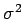
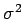
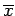

Inhalt Index DeskTop Bronstein

 Wahrscheinlichkeitsrechnung und Mathematische Statistik Mathematische Statistik Wichtige Prüfverfahren Verteilung der Stichprobenmittelwerte
Wahrscheinlichkeitsrechnung und Mathematische Statistik Mathematische Statistik Wichtige Prüfverfahren Verteilung der Stichprobenmittelwerte


Wenn X normalverteilt ist mit den Parametern  und , dann ist
und , dann ist  normalverteilt mit den Parametern
normalverteilt mit den Parametern  und
und  , d.h., die Dichtefunktion von
, d.h., die Dichtefunktion von  ist stärker um den Mittelwert
ist stärker um den Mittelwert  konzentriert als die Dichtefunktion f(x) der Grundgesamtheit. Es gilt für einen vorgegebenen Wert
konzentriert als die Dichtefunktion f(x) der Grundgesamtheit. Es gilt für einen vorgegebenen Wert  :
:
Daraus folgt, daß mit wachsendem Umfang n der Stichprobe die Wahrscheinlichkeit größer wird, daß der Stichprobenmittelwert eine gute Näherung für  ist.
ist.
| Beispiel |
|
Für erhält man aus (16.137) , und für verschiedene Werte von n folgen daraus die Werte in der folgenden Tabelle. Man liest aus der Tabelle z.B. ab, daß bei einer Stichprobe vom Umfang n = 49 der Stichprobenmittelwert  mit einer Sicherheit von 99,95 % um höchstens vom Mittelwert |
| n | |
| 1 | 38,29 % |
| 4 | 68,27 % |
| 16 | 95,45 % |
| 25 | 98,76 % |
| 49 | 99,96 % |